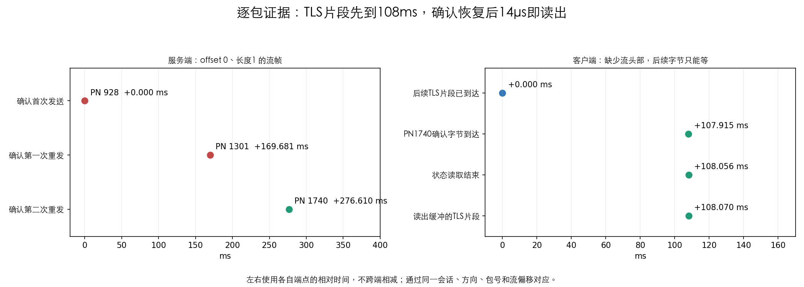
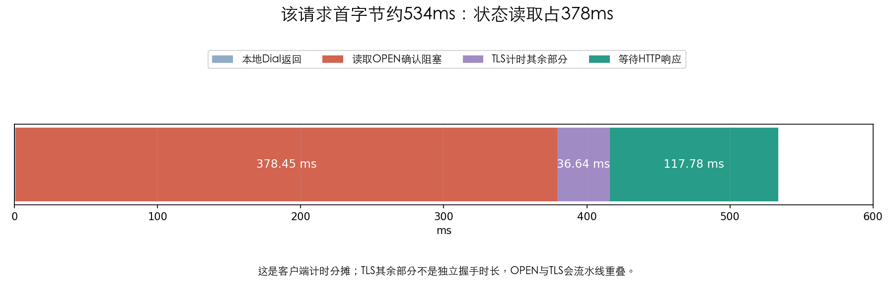
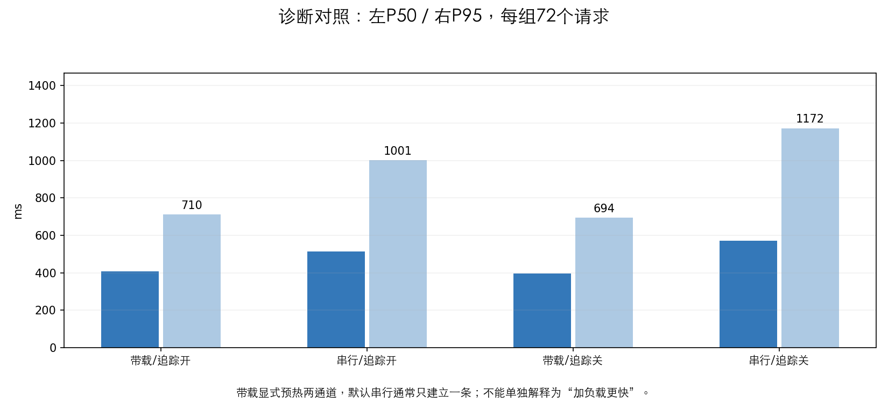

2026-11-22 · 同一Android TFY-AN00 / Wi-Fi / 香港VPS · 原调度 next-opt，两个候选调度关闭。未改加密、BBR或业务线格式。
一部分等待来自OPEN确认及后续同流数据的恢复，而非单纯“选择了繁忙连接”。初轮追踪108个请求中，82个有前8KiB下行重叠区间恢复证据，26个能看到覆盖流offset 0的重发被接收后，客户端结束状态等待；其中带载10、连续10、冷启动6。追加36请求又出现12个状态恢复解除阻塞样本。这些恢复事件不能直接当作请求失败计数；即使前台请求最终成功，也会产生等待。后台文件完成情况另列，未把超时文件当作成功。
这些是本轮具体样本的证据，不代表全部尾延迟都只有这一种原因。发送端判丢/PTO、首发包在接收端状态解除前未被观察、覆盖同流偏移的新包被观察，是确认恢复路径的依据；不能据此区分底层真实丢包、过度延迟或接收端处理问题。
旧entry_us只量到Dial返回。Next QUIC的Dial提交OPEN后就返回，状态字节的读取在quicConn.Read内；目标tls.HandshakeContext会触发该Read，因此旧target_tls_us包含OPEN状态等待。之前“入口小于1ms，所以慢不在入口”的推断不成立。端到端首字节、下载、完成率及原候选未通过性能门槛的数值结论不变。旧报告和数据包已补更正说明。
完整测量口径更正。新status_wait_us仅为实际读取状态时的阻塞，不是OPEN总往返；扣除它只是客户端时间分摊，不能当成独立TLS握手时长，因为两者会流水线重叠。
| 项目 | 实测 |
|---|---|
| 来源 | loaded-on-b2-p2 |
| 业务流 | 12 |
| 首字节 | 533.841 ms |
| 服务端目标拨号 | 0.229 ms |
| 读取OPEN确认阻塞 | 378.448 ms |
| 承载确认流头部的发送包号 | 928 → 1301 → 1740 |
| TLS后续片段提前到达 | 108.056 ms |
| 状态读取结束后读到TLS片段 | 0.014 ms |
原始包928及后续1301覆盖offset 0、长度1，均被发送端判丢；1740覆盖同一偏移并被客户端观察。客户端此前已观察到offset 1及更高偏移的TLS片段，但可靠有序流不能跳过缺失的第0字节。确认恢复后约14微秒即可从缓冲区读到先到的TLS数据。这是本样本中等待的直接证据。不能据1字节STREAM帧推断整个UDP包只有1字节，包还可能包含其他帧。
该样本完整证据 · 108请求恢复证据CSV。包号按方向、包号空间和同一QUIC会话配对；会话用随机OPEN nonce的一向哈希关联，两端不输出真实nonce、连接ID、目标、凭证或载荷。



| 场景 | 样本 | 成功 | 首字节P50ms | P95ms | 最大ms | 状态读取P95ms | 服务端拨号最大ms | 后台完整文件 |
|---|---|---|---|---|---|---|---|---|
| loaded-on | 72 | 72 | 407.376 | 710.21 | 816.509 | 319.419 | 2.042 | 10/12 |
| unloaded-on | 72 | 72 | 513.99 | 1001.467 | 1704.177 | 400.525 | 2.847 | — |
| loaded-off | 72 | 72 | 396.013 | 693.742 | 757.784 | None | None | 8/12 |
| unloaded-off | 72 | 72 | 571.933 | 1172.18 | 1333.163 | None | None | — |
on/off为双端传输追踪开启/关闭，轻量通道记录均开启。首轮带载追踪开/关的后台文件分别10/12与8/12完整完成，未完成文件保留在原始JSONL中；本表前台成功不能代替后台完成率。PTO及恢复记录可能有开销，因此不将追踪结果并入性能升级验收。带载有两条16MiB后台下载、每组12个前台请求；无载使用默认串行warm请求，另有cold请求用于追踪。它们不是纯粹只改变负载的因果对照：混合测试显式Warm两个通道，默认串行warm通常只建立一条；因此不能用此表声称“加后台下载就更快”。on/off也不是同一时刻，不凭微小差异宣称追踪提速或精确测量开销。
| 轮次 | 场景 | 请求数 | 下行区间恢复证据 | 上行区间恢复证据 | 确认恢复后解除状态阻塞 |
|---|---|---|---|---|---|
| 包号追踪108请求 | mixed | 36 | 25 | 0 | 10 |
| 包号追踪108请求 | warm | 36 | 29 | 0 | 10 |
| 包号追踪108请求 | cold | 36 | 28 | 0 | 6 |
| 内核计数补测36请求 | mixed | 12 | 10 | 1 | 7 |
| 内核计数补测36请求 | warm | 12 | 12 | 0 | 2 |
| 内核计数补测36请求 | cold | 12 | 9 | 1 | 3 |
元数据只观察每流前8KiB的帧偏移/长度、包号及判丢/PTO事件，单连接输出最多8192条、跟踪包号最多4096个；本轮meta_dropped为0。没有记录数据载荷、TLS密钥或QUIC连接ID。重叠区间恢复的判断要求首发包在截至请求完成+100ms的接收记录中未观察到、新包覆盖重叠偏移并被接收、原包被判丢或两次发送之间有PTO。状态解除证据还要求重发覆盖offset0、是客户端第一次观察到该流offset0、抵达时客户端正在等待状态、实际阻塞至少1ms，且接收与状态读取结束相隔0—20ms。
计数是“有这些证据”的请求数，不能把没有证据解释为没有恢复，也不能把它直接叫物理丢包率。无需依靠两端时钟同步来做包号/偏移配对；250ms统计窗口关联另有时钟不确定性约250ms，仅供辅助，不能替代逐包证明。
首轮服务端进度记录中，发送DATA_BLOCKED/STREAM_DATA_BLOCKED计数最大值为13。这未提供流控阻塞帧证据，但不能排除所有应用Write排队。拥塞窗口与在途量保留在原始事件，尚不能据低频快照确定所有慢请求是否受到拥塞窗口限制。
| 补测 | UDP InErrors增量 | RcvbufErrors增量 | SndbufErrors增量 |
|---|---|---|---|
| loaded-on-b1-p1 | 0 | 0 | 0 |
| unloaded-on-b1-p2 | 0 | 0 | 0 |
VPS的历史UDP缓冲错误计数非零；没有更早的前置基线，不能归因于首轮实验。追加两例使用同一追踪二进制，前后全局计数如上；该结果不追溯排除此前本机错误，也不能排除安卓、虚拟化或中间链路问题。全局计数不是单进程计数。
新评分主要试图避开繁忙通道，但已发流中的缺口不能靠后续选择另一通道修复。首读等待又混合了OPEN确认、传输恢复和目标响应，拿它当连接质量信号可能误判。过度惩罚高吞吐通道或保留轻载通道，还会损失吞吐。本轮未启用两个候选，没有用额外重放或跳过确认来制造改善。
先试验OPEN确认与首段返回数据的合并/调度，测能否减少额外头部依赖和恢复等待，同时保留认证失败、目标失败和服务端先发场景。它不能消除可靠流内部的重传等待，也不能保证一定提速。当前只完成诊断，没有上线该优化，没有修改默认调度，更没有据此断言GFW识别或干扰。
首轮汇总 · 逐请求阶段与计数CSV · 包号证据 · 补测证据 · UDP计数差分。首轮24例、包号追踪6例、内核补测2例，共32例；每轮分别保留计划、时间线、哈希与原始日志。各轮二进制和条件不同，不合并性能排名。没有进行多网络、长期阻断或正式App性能验收。
32例均按计划结束，原始主JSONL行可解析、二进制哈希一致；两轮race/vet通过。验证记录 · 本轮核心代码差异。手机VPN已恢复、亮屏设置恢复为0；临时服务、私有配置与手机测试文件已清理，生产入口保持运行。未安装正式App或修改默认调度。源码仍需FastCatAPP core工作区的本地依赖，包内不含部署凭证。